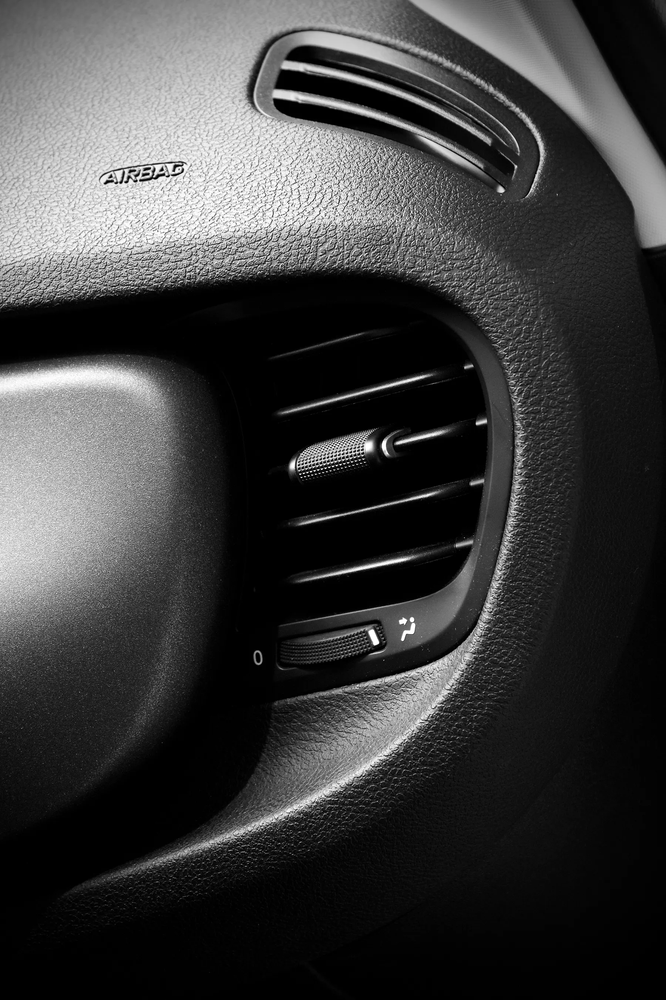
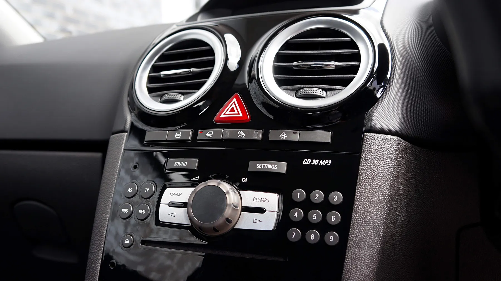
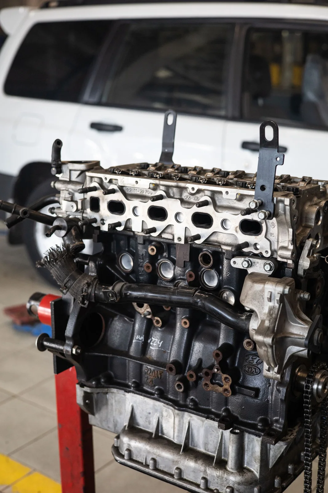

Climatização
automotiva
Converse sobre o funcionamento do ar-condicionado do seu veículo e consulte os serviços disponíveis para o seu caso.
Consultar a JMO conforto começa
dentro do carro.




Climatização automotiva é com a JM. Conte o que percebeu no ar-condicionado e consulte o atendimento para seu veículo.
Falar com a JMFotografias ilustrativas de banco. Não representam a equipe, a oficina ou trabalhos da JM.
Uma conversa sobre o ar do seu carro.
A JM Climatização atua no segmento automotivo. Aqui, você encontra um caminho direto para falar sobre o ar-condicionado, consultar os serviços disponíveis e combinar o próximo passo.
O ar não resfria como antes ou a ventilação está diferente? Conte o que percebeu e quando começou.
Contar para a JMApresente sua necessidade para consultar o serviço indicado, a disponibilidade e as condições de atendimento diretamente com a JM.
Converse sobre o funcionamento do ar-condicionado do seu veículo e consulte os serviços disponíveis para o seu caso.
Consultar a JMInforme o que está acontecendo. A JM confirma como funciona a avaliação e quais são as condições para consultar valores.
Consultar condiçõesConsulte os dias, os horários e a disponibilidade antes de levar seu carro. Combine os detalhes diretamente no contato.
Consultar agendaTemperatura, fluxo de ar e situações em que o sintoma aparece: conte para a JM como está o conforto dentro do veículo.
Preparar meu contatoUma seleção de imagens de referência para a climatização e o contexto automotivo. Fotografias ilustrativas; não são trabalhos realizados pela JM.
Saídas de ventilação no interior do carro.
Controles que fazem parte da experiência a bordo.
Um olhar para o contexto técnico do veículo.
Escolha um assunto e, se quiser, informe modelo e ano. A mensagem fica pronta para você revisar e enviar no WhatsApp.
(48) 99663-5708Para dias, horários e localização, consulte a JM antes da visita.
Você revisa e envia a mensagem no WhatsApp. A JM confirma disponibilidade e valores.
Informações úteis para começar o contato com a JM Climatização.
Pelo WhatsApp ou por ligação para (48) 99663-5708. Use o botão desta página para preparar uma mensagem com o assunto e os dados do veículo.
Modelo e ano do carro, o que percebeu no ar-condicionado e quando começou. Você não precisa descobrir a causa antes de conversar com a JM.
Conte a necessidade do seu veículo pelo WhatsApp. A JM confirma os serviços disponíveis e como pode atender ao seu caso.
Entre em contato para consultar valores e condições. A JM informa se é necessário avaliar o veículo antes de apresentar um orçamento.
Consulte os dias, os horários e a disponibilidade diretamente com a JM pelo telefone ou WhatsApp antes de se deslocar.
Peça a localização atualizada pelo WhatsApp antes da visita. O endereço e a região de atendimento serão incluídos após confirmação.
O próximo passo para falar sobre o seu carro.